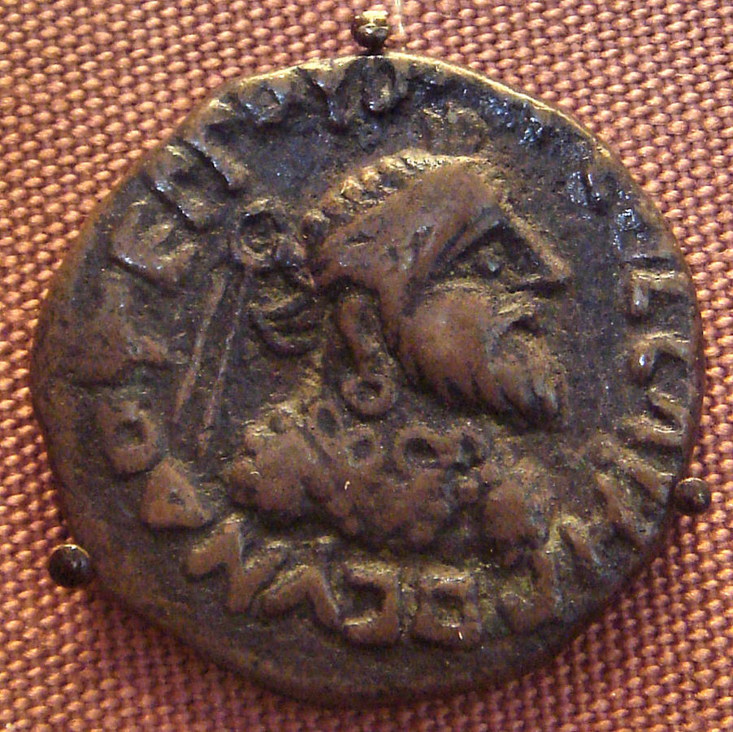
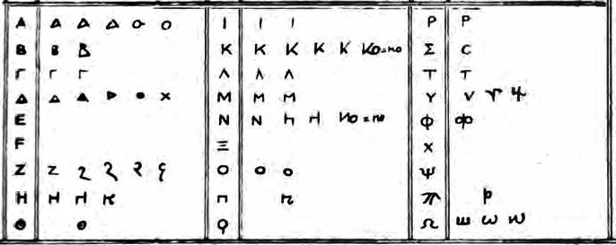
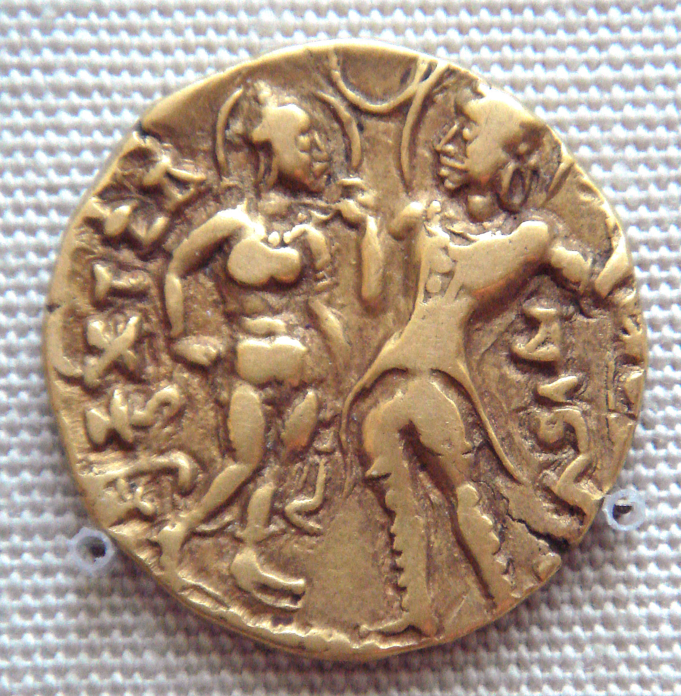
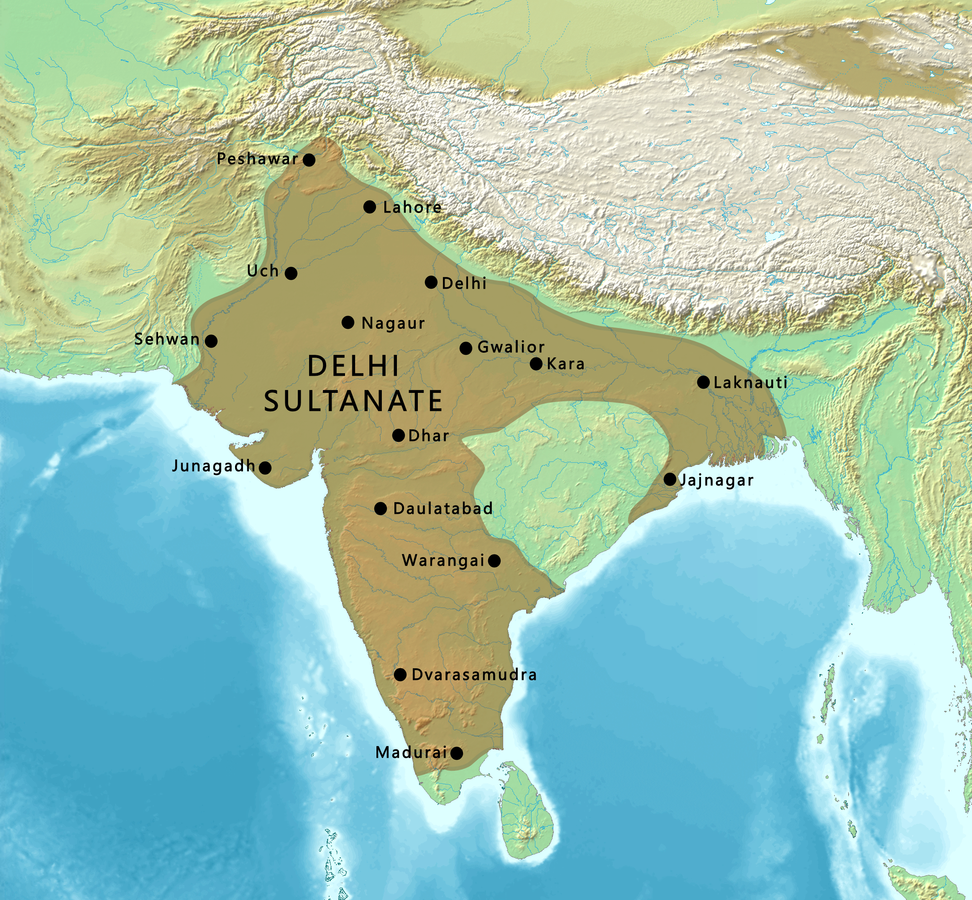
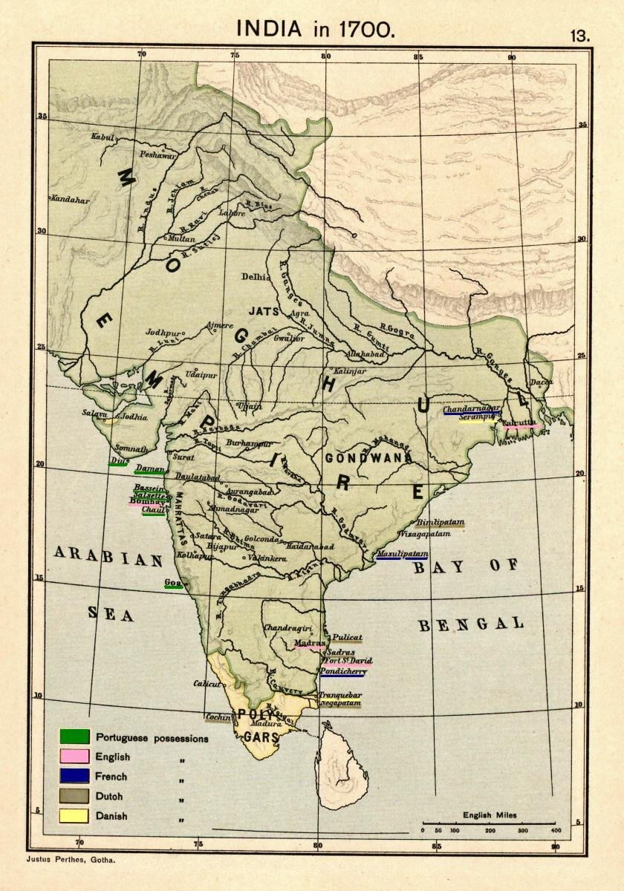
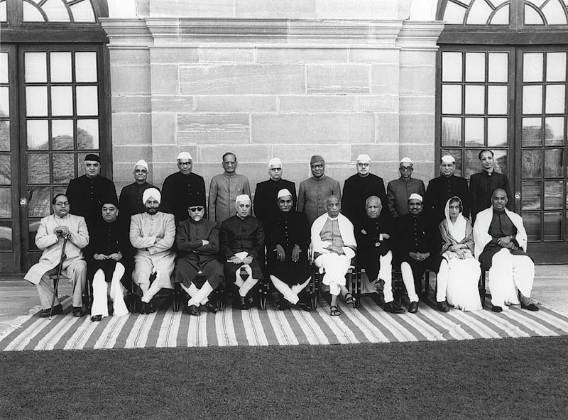

Ancient India ( 1AD - 1206AD )
- Early Kingdoms ( 1AD - 4AD )
- Indo-Scythian and Indo-Parthian Kingdoms:
The Indo-Scythian and Indo-Parthian Kingdoms: Nomadic Empires of Ancient India From the 2nd century BCE to the 3rd century CE, there were two major nomadic empires in the Indian subcontinent: the Indo-Scythians and the Indo-Parthians. These kingdoms represented splinter groups of the two major empires-the Scythians and the Parthians, primarily established in what today makes up Afghanistan, Pakistan, and northwestern India. The Indo-Scythian Kingdom
The Indo-Scythians were originally of Central Asian origin, falling into the Scythians' line. These individuals are famed for their horsemanship and warrior ways. This is when the Indo-Scythians migrated to the west, crossed over the Syr Darya river, entered the Iranian plateau, and then marched into the Indian subcontinent during the 2nd century BCE. After settling, the Indo-Scythians established their kingdom in northwestern India, primarily in Gandhara and Mathura. Their period, between the 1st century BCE and the 1st century CE, went hand in hand with the period of the Indo-Parthians, who marked a vibrant era of cultural exchange and interaction.
Their reputation can be particularly strongly witnessed in their eccentric coinage, where one often finds Greek gods obsequiously presented with Indo-Scythian kings. Such syncretism in their ruling is well attested through the interweaving of such cultural motifs. They also played a monumental role in Gandharan art, a Greco-Buddhist type of which emerged during this time and which blended Hellenistic with native artistic tradition.
The Indo-Parthian KingdomPortrait of Gondophares on a coin
image credit: https://en.wikipedia.org/wiki/Indo-Parthian_kingdomParallel to this, there were the Indo-Parthians-another nomadic dynasty derived from the Scythian tribes, which had entered the land after marrying within the Parthian nobility. The latter led to them being accommodated in northwestern India but they settled in Gandhara and Mathura, also.
This would therefore signify that the period of Indo-Parthians, which spans the time between the 1st century BCE and the 3rd century CE, merged with that of the Indo-Scythians and led to an extremely diverse and creative development of cultural and artistic heritage. As a characteristic of their own specific coins, the Indo-Parthians depicted the kings and gods of Parthians as well as continued integration of foreign influences.
The Indo-Parthians introduced architectural styles inspired from the Parthian and Roman styles, further diversifying the region's rich architectural heritage. They also facilitated the development of Gandharan art, ensuring it survived and spread.
Cultural Impact and LegacyThey molded in the best possible manner, historically as well culturally for India the Indo-Scythian and the Indo-Parthian kingdom. These kingdoms led some influence upon Indian art and architecture from Central Asia to the Middle East through introduction. Moreover, with Buddhism, and other religion of central Asia, this provided the enhancement of their regions spiritual scene.
Although their reign was short, the Indo-Scythians and the Indo-Parthians have succeeded in leaving a rich legacy that continued to be carried on through subsequent epochs in Indian history. Their existence remains a testament to the intricate interplay of cultures that characterized ancient India; hence, they will be of great importance in establishing the importance of these nomadic empires.
-
Kushan Empire

Portrit of Heraios on a coin.
image credit: Classical Numismatic Group, Inc. http://www.cngcoins.comThe Kushan Empire was one of the most influential and powerful empires that thrived between the 1st and 3rd centuries CE in Central and South Asia. It was founded by the Yuezhi, who were a nomadic people from Central Asia. These people migrated westward until they finally established their kingdom in Bactria, which is modern-day Afghanistan and Uzbekistan.
Geographical Spread: It reached as far north as Central Asia and as far south as North India, covering parts of present-day Uzbekistan, Tajikistan, Afghanistan, Pakistan, and Northern India.
Geographical Spread: Kushans played a very important role in the cultural exchange between East and West. They were instrumental in spreading Buddhism to Central Asia and China. The Gandharan art style, a blend of Greco-Roman and Indian influences, flourished during this period.
Kushan Sript
Economic Prosperity: Kushan Empire The empire was a great economic power as it controlled two important trade routes, one of which was the famous Silk Road. Kushan gold coins with Greeks, Indian, and Parthian patterns were easily circulating and traded in the foreign markets.
Prominent Leaders:Kujula Kadphises: The founder of Kushan Empire, Kujula Kadphises united Yuezhi tribes with his capital in Kabul. Vima Kadphises: He extended his empire into northern India till Mathura.
Kanishka the Great: He is considered to be the greatest Kushan king. He further extended his empire and patronized Buddhism. He called the Fourth Buddhist Council, which helped him in the development of Mahayana Buddhism.
The Kushan Empire had a lasting impact on the region. Under their patronage, it was Gandharan art style that influenced subsequent Indian art and architecture, while the spread of Buddhism under their rule helped change the religious landscape of this region.
The decline of the Kushan Empire began in the 3rd century CE, with the rise of the Sassanian Empire in Persia and the Gupta Empire in India. Despite this, their contributions to history and culture are still celebrated and studied.
- Indo-Scythian and Indo-Parthian Kingdoms:
-
Gupta Empire (4AD - 6AD)
The Gupta Empire is often considered the "Golden Age of India." It was in this period, between the 4th and 6th centuries CE, that the greatest cultural, economic, and scientific growth occurred.
Key Facts about the Gupta Empire: Extent of Geographical Area: At its height, the Gupta Empire encompassed vast parts of the Indian subcontinent, covering parts of present-day India, Pakistan, Bangladesh, and Nepal.Cultural Empowerment: The period of the Guptas is the most glorious time in many respects:
Science and Mathematics: contribution of mathematicians, astronomers, physicians. Development of zero and the decimal number system traces back to this period
Art and Architecture: The art styles in India, in both sculpture, painting, and architecture, were refined by the Guptas. Fine examples of this remarkable achievement include the Ajanta and Ellora Caves of magnificent murals and intricately carved rock-cut temples
Literature: Sanskrit literature reached its full maturity during this period and works by Kalidasa in plays Shakuntala and Meghaduta, and poetry Kumarsambhava as classics.
Economic Prosperity: The Guptas encouraged economic development through agriculture, trade, and industry. The flourishing of art and architecture also aided in the development of the economy.
Religious Tolerance: The Guptas primarily followed Hinduism, but they tolerated other religions, which were Buddhism and Jainism. Key rulers:
Chandragupta I: He laid the foundation for the empire; he founded his capital city at Pataliputra
Samudragupta: He was a great warrior-king, who expanded the empire immensely through military conquests.Queen Kumaradevi and king Chandragupta I
image credit: https://en.wikipedia.org/wiki/Gupta_Empire
Chandragupta II (Vikramaditya): He further consolidated the empire and patronized various arts and sciences.
Legacy of the Gupta Empire:
Most features of Indian culture and civilization have been established here. As of the Gupta period to date, the developed science and mathematic improvement mark the long-lasting impacts of India and spreading the impact out to the outer circles of the Indian subcontinent. The legacy that left behind the Gupta empire has plenty to say about the country's rich and vast cultural heritage. -
The Post-Gupta Period: A Transitional Era in Indian History
The Post-Gupta period, which spanned between the 6th to the 12th century AD, was a phase of political, social, and cultural transformation in India. After the collapse of the Gupta Empire, which embodied the ideal of centralized power and cultural flowering, political power in the Indian subcontinent fragmented into numerous regional kingdoms.
Important Features of the Post-Gupta Period
1. Political Fragmentation
The end of the Gupta Empire brought about a new political order in which various regional kingdoms began to surface. Among them were the Maukharis, Pushyabhutis, Chalukyas, Pallavas, and Pandyas. All of these dynasties have played their part in local governance and cultural identity.
One of the best-known figures of this period was Harshavardhana, a powerful king of the Pushyabhuti dynasty. He managed to unite most of northern India under his rule in the 7th century and formed a relatively strong empire. His reign was short-lived, however, and his empire broke up rapidly following his death, further dispersing the political structure.
2. Cultural Continuity and Change
Even during this period of political instability, there was cultural continuity along with innovation. Hinduism continued to thrive. There was a flourishing of various sects and philosophical schools that emerged. Buddhism and Jainism were also active during this time.
It is also the time that produced literary and artistic traditions to flourish. The art forms of classical Indian literature were at their best, with poetry, drama, and sculptures. Architectural innovations featured the construction of temples during this period in the Hindu deities' name. The Dravidian architecture style, which later found its way to the domination of South India, saw its birth in this epoch, characterized by designs on the walls and towers on their gates.
3. Economic and Social Developments
The Post-Gupta period was very prosperous economically. Trade was not only thriving domestically but also internationally through routes, while agricultural practices improved with enhanced food production that helped feed the increasing populations of regional kingdoms.
Traditional caste continued to structure society even though it adapted to changing circumstances of the time. Though the hierarchical divisions still played a role, the emergent social dynamics started taking shape in new identities under the existing framework.
4. Foreign Invasions
The Post-Gupta period was also seen by foreign invasions. Of special mention here is that of the Hunas, who were a Central Asian nomadic people. The incursions in the 5th and 6th centuries brought a halt to the political and economic stability of the region and caused much trouble for the local kingdoms.
Significance of the Post-Gupta Period
The Post-Gupta period was a time that epitomized challenges and opportunities all combined in one. It is an era, therefore, that presented problems on the one hand and marvelous strides in culture and intellectual realms on the other hand. The Indian people established a foundation at this period that would bear upon Indian history for centuries afterward. These regional kingdoms were to pave the way for eventual emergence of strong powers like the Delhi Sultanate and the Vijayanagara Empire. Ultimately, the Post-Gupta period forms a critical chapter in the grand story of India's past-a tale of strength and transformation during a time of change.
Medieval India ( 1206AD - 1857AD )
- Delhi Sultanate
The Delhi Sultanate was a medieval empire that controlled vast portions of the Indian subcontinent for nearly four centuries, spanning from 1206 to 1526 CE. It was founded on the remains of the Ghurid empire and had become a determining factor in molding the Indian cultural and political scenario. Key Features of the Delhi Sultanate
Map of Delhi Sultanate at its greatest extent under the Tughlaq Dynasty
image credit: https://commons.wikimedia.org/
Dynastic Rule The five dynasties, the Delhi Sultanate installed their respective marks on its legacy. The first in this list was the Mamluk Dynasty, dating from 1206 to 1290, an establishment of Qutb-ud-din Aibak, who is known to have been originally a slave of Muhammad Ghori. The Khalji Dynasty started with Jalaluddin Khalji; however, it is during this dynasty that the era of expansion was remembered at large, as Alauddin Khalji would enlarge the territory of this empire.
Tughlaq Dynasty (1320-1414): Ghiyas-ud-din Tughlaq was the founder. His controversial ruler was Muhammad bin Tughlaq with his policies of reformative trends.
Sayyid Dynasty (1414-1451): This was a short dynasty that began with Khizr Khan and could hardly hold sway in an already confused political scenario.
Lodhi Dynasty (1451-1526): It was the last of the Sultanate and its demise came about due to the defeat of Ibrahim Lodi at the hands of Babur that resulted in the establishment of the Mughal Empire.
Cultural and Architectural Impact
The Delhi Sultanate introduced into India a new style of Islamic architecture, which gave many mosques, tombs, and forts. The greatest monument among them is Qutb Minar - a UNESCO World Heritage monument, representing the architectural genius of that time. These architectural heritage was Persian-Indian style amalgamation; it left a deep scar on Indian architecture later. Economic and Administrative System
The Sultans were able to establish a strong administration system of provinces and districts through which they governed with effectiveness. They introduced revenue systems that made the tax collection more effective while fostering trade and commerce, therefore enhancing economic activity in the region.
Social and Religious Impact:
While the Delhi Sultanate was Muslim-majority, the rulers got heavily involved with other religious communities that included Hindus. Due to these interactions, there were significant cultural exchange, which brought fusion in art, music, and cuisine between Islamic traditions and Indian traditions. Synthesis played a major role in shaping the diversification of the Indian culture. Decline of the Sultanate
The empire experienced decline in various aspects such as internal strife, external invasions, and economic challenges. The invasion of Timur in 1398 particularly weakened the backbone and stability of the empire structure.
Legacy: Delhi Sultanate played a very crucial role in the history of India and its impacts are seen until today. It added to the pages of the Indian subcontinent's history in a manner that would never be erased, whether it was related to culture or architectural, or administrative. As a part of the rich cultural heritage of India, it has made an important chapter in the history of India. -
Mughal Dynasty
Mughal Empire at its greatest extent under Aurangzeb in 1525.
image credit: https://commons.wikimedia.org/It was one of the most important empires that took place in Indian history and was founded by Babur in 1526. He was a Central Asian and established his rule in India following his victory over Ibrahim Lodi, the Sultan of Delhi, at Panipat. The central Asians merged their military tradition with Persian culture and administration to build up a centralized empire almost spreading across the entire breadth of the subcontinent in its maximum extent. During emperors Akbar, Jahangir, Shah Jahan, and Aurangzeb, Mughals passed their golden time of culture, architectural development, and economical growth.
Akbar the Great was from 1556-1605; he was probably one of the most significant rulers during the period, for the policies concerning religious tolerance, administrative reform, and encouraging arts and culture were prevalent during his reign. Architectural monuments from the Mughal Empire include the Taj Mahal, a monument built by Shah Jahan, the Red Fort in Delhi, and others. The end of Aurangzeb's reign marked the final period of the reign of this emperor, when the state began to deteriorate, both internally with internal conflicts and externally by attacks on its sovereignty, as well as external influences from the Western colonial powers. By the early 19th century, Mughal power had been effectively displaced by the British East India Company, and the formality of the empire's collapse was brought about after the Indian Rebellion of 1857, which ended the reign of over three centuries of Mughal authority.
British India and Post-Independence
-
British India
British India Flag
image credit: wikimedia.orgThis period is known as British India. It was maintained from 1858 to 1947. Initially, the British East India Company ruled Indian trade and territories. However, after the Indian Rebellion of 1857, it was transferred to direct control by the British Crown. With these decisions, the British Raj or Indian Territory came into power with the consolidation of their empire that led to the Indian administrative system for colonial policies wherein many facilities of railways and telegraph communications supported the resource extraction systems towards further British control. However, under British rule was not left untouched, changing its system of politics along with other social, culture and economies of Indian nationals drastically.
Indian developed vastly under the British rule- such as the introduction of Western education, legal systems, and administrative structures-which was often exploitative and mostly for the benefits of the British. India saw enormous wealth being siphoned out by the colonial government, leaving people impoverished and famines frequenting the country, and also with the stifling of various industries for the sake of ensuring Britain's economic superiority. Increasingly, Indians began to protest British rule, with nationalist movements gaining ground. Mohandas Gandhi, Jawaharlal Nehru, and Subhas Chandra Bose were very influential leaders in the context of independence, and an Indian National Congress developed as an influential force in demanding independence. After long years of struggle, India finally was able to free itself from the British on August 15, 1947. However, India was split into two independent countries, and this was accompanied by tremendous violence and mass migration.
-
Post Independent India

First Cabinet of Independent India
Post-independent India, which gained independence from British rule on August 15, 1947, faced significant challenges as it embarked on its journey as a newly sovereign nation. The country was partitioned into India and Pakistan, leading to widespread violence, mass migration, and the displacement of millions of people. India also faced the daunting task of integrating its vast and diverse population—comprising numerous ethnic, linguistic, and religious groups—into a unified nation-state. The newly formed government, led by Prime Minister Jawaharlal Nehru, set out to build a democratic, secular republic while addressing the legacies of colonialism and the socio-economic problems of poverty, illiteracy, and underdevelopment.
Nehru and his successors emphasized nation-building through a mixed economy, promoting industrialization, land reforms, and the development of key sectors such as education and healthcare. The Indian Constitution, adopted in 1950, established India as a democratic republic with a parliamentary system and guaranteed fundamental rights to all citizens. India also pursued a policy of non-alignment during the Cold War, seeking to avoid alignment with either the U.S. or the Soviet Union, while playing a significant role in the formation of the Non-Aligned Movement (NAM). In the 1960s and 1970s, India faced numerous challenges, including wars with neighboring Pakistan (1965 and 1971), economic instability, and internal political turmoil, but it also saw advancements such as the Green Revolution, which improved agricultural production.
By the 1990s, India shifted towards a more market-oriented economy, embracing economic liberalization, privatization, and globalization under the leadership of Prime Minister P.V. Narasimha Rao and Finance Minister Manmohan Singh. These reforms transformed India into one of the world's fastest-growing economies, although challenges like poverty, corruption, and inequality persisted. India continued to develop as a regional power with a growing influence in international affairs. In the 21st century, India's information technology sector, nuclear capabilities, and demographic dividends became key drivers of its global presence, while internal debates about secularism, regional autonomy, and economic inequality remained central to its political landscape.